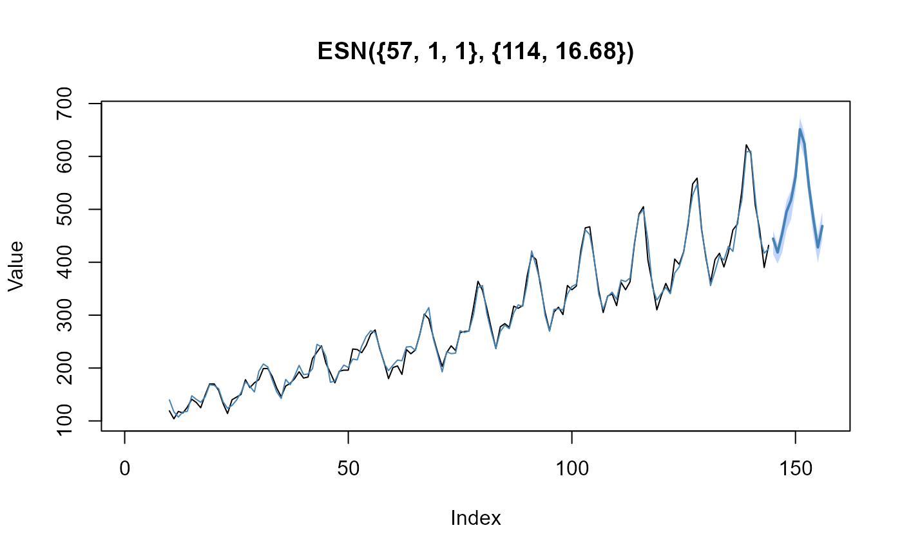

Forecast an Echo State Network from a trained model.
forecast_esn(object, n_ahead = 18)An object of class esn. The result of a call to train_esn().
Integer value. The number of periods for forecasting (i.e. forecast horizon).
A list containing:
point: Numeric vector containing the point forecasts.
actual: Numeric vector containing the actual values.
fitted: Numeric vector containing the fitted values.
n_ahead: Integer value. The number of periods for forecasting (forecast horizon).
model_spec: Character value. The model specification as string.
xdata <- as.numeric(AirPassengers)
xmodel <- train_esn(y = xdata)
xfcst <- forecast_esn(xmodel, n_ahead = 12)
plot(xfcst)
